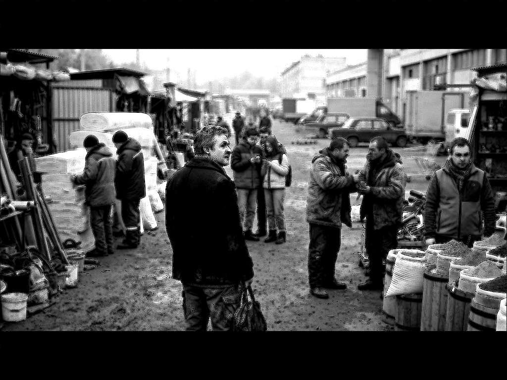

Книга «Фугу для человечества»
Глава 7. Что останется, если отскрести ярлыки

(в которой Марко Поло оказывается прав)
Неделя пролетела незаметно.
Вряд ли это можно назвать днём сурка, хотя некая повторяемая монотонность всё же присутствовала. Впрочем, не более чем восход солнца, который нам удаётся наблюдать вновь.
Остывающий кофе допит. Пар над чашкой окончательно сошел на нет, растворившись в воздухе кухни. Субботнее утро набирало обороты за окном. Пора было собираться заняться реальностью.
Подготовка к зиме, если кроме квартиры вы владеете загородным домиком либо дачкой под Киевом, — это поездки, покупки и прочее.
Этим утром Дмитрий Александрович решил заехать на строительный рынок, а потом в супермаркет. В пику недавнему разговору с другом о глобальном, глядя на окружение, у него возникла ассоциация с Великим шёлковым путём — вот тебе и фундамент, и отправная точка.
Если вдуматься, любая субботняя толкучка у прилавков или забитая машинами стоянка — это же идеальный Великий шёлковый путь нашего времени.
Эдакий караван-сарай посреди бетонной пустоши.
Пересекая ряды павильонов, он размышлял, мысленно комментируя происходящее.
Для доморощенного Марко Поло это был не рынок, а путь сквозь цепочку враждующих провинций, создающихся империй, пусть и местечкового пошиба.
Вот торговец у лотка со специями.
Со спины — обычный парень, от любого другого не отличишь.
Но в профиль — те самые скулы и узкий разрез тёмных глаз под смуглым лбом.
Мозг сам дорисовывает ему затейливый тюрбан, пока он протяжно, нараспев нахваливает сушёное манго.
Вот мужики в промасленных куртках, ожесточённо спорящие над кровельными саморезами, — вылитое племя суровых степных кузнецов, проводящих обряд со священным железом.
А чуть дальше, у тележек с утеплителем, бредут шаманы, ищущие великий дымный корень или листья мудрости.
Хотя, по сути, то ли хипстеры, то ли ещё не ставшие мейнстримом представители очередного течения — в ярких дутых пуховиках.
Странное, изнеженное племя, оторванное от земли, с благоговением всматривающееся в свои светящиеся плоские амулеты, возносящее молитвы новому богу — Рилсу.
Так незаметно за этими размышлениями были сделаны все необходимые покупки и приобретения.
Дмитрий Александрович закинул тяжёлую поклажу в багажник — машина слегка качнулась. Он распрямился, с хрустом разминая затёкшую поясницу, и кинул взгляд на парковку: снова, очередной красавец аккуратно раскорячился поперёк проезда, перекрыв половине ряда нормальный выезд.
— Классика, — хмыкнул он в воротник. И бросил взгляд на валявшуюся прямо под ногами пустую пластиковую бутылку. Даже не помятую.
Дмитрий Александрович хотел было зло пнуть ни в чём не повинный пластик, но, улыбнувшись, передумал и, мысленно выругавшись, поднял её, чтобы бросить в урну.
Урна стояла буквально в трёх шагах, но бутылка валялась рядом.
Вот он, настоящий, истинный человек во всей красе.
Что снаружи, что внутри.
Заметив бегущего к раскоряченной машине парнишку и прикинув перспективы диалога, Дмитрий Александрович решил не тратить нервы — наказание от этого бессмысленного разговора явно превысило бы доставленные неудобства.
Он вскинул подбородок, тяжело посмотрел в свинцовое, низкое небо и сел за руль.
Заведя мотор, мысли выстроились во что-то образное:
Вся эта мелкая зависть, подлость, шкурный эгоизм, ослиное упрямство и смачное хамство в очереди на кассу. Куда ж без них?
Дерьмо, видите ли, субстанция на редкость космополитичная.
Оно равномерно размазано по планете, не имеет национальности и не нуждается в переводчиках.
Безжалостный мысленный эксперимент по соскребанию пёстрых казённых наклеек был прост как лом и суров, как мороз за тридцать.
Лишившись штрихкодов государств в виде гербов, убрав политические штемпели, отклеив таможенные декларации и телевизионные ярлыки...
Что останется там, под этой плотной бумажной шелухой, стоять на осеннем пронизывающем сквозняке?
Останется просто человек. Голый, слегка растерянный и абсолютно универсальный.
Останется его работа, от которой к вечеру гудят ноги или слезятся глаза от едкой цементной пыли.
Останутся его дети, за которых одинаково болит сердце, на каком бы языке ни пели им колыбельные.
Останутся его смешные, сугубо домашние страхи — перед старостью, перед начальником, перед зубным врачом или налоговым инспектором. Останутся его колоссальные, эпические глупости, которые он с завидной регулярностью творит на всех континентах.
Останется его любовь — иногда неуклюжая, но настоящая.
Вон парень у соседнего пикапа выбирает жене долгожданную обновку, а сам вожделенно косится то на витрину с рыболовными снастями, то на соседний стенд квадроциклов.
И рядом с этим — внезапное, иррациональное, почти святое желание сделать что-нибудь хорошо. Не за медаль, а ради самой красоты ремесла.
Ровно положить плитку, написать изящный алгоритм, вырастить птицу или дождаться урожая яблок.
Вот этот самый клубок из нежности, глупостей, таланта и пороков — это и есть наш исходный материал.
Базовая комплектация, черт побери.
Выезжая через последний шлагбаум парковки, он вспомнил разговор на лавке во дворе с пацанами, и улыбка стала шире. Слова слетели с губ сами, пожалуй, без участия хозяина:
— Константин Эдуардович, ведь ты смотрел туда ровно с этим пониманием. Не питал иллюзий, прекрасно знал, что мы полетим к звёздам со всеми нашими пожитками, страхами, ржавыми инструментами и грязными ботинками.
Потому что другого человечества у нас для космоса нет.
Пока нет.